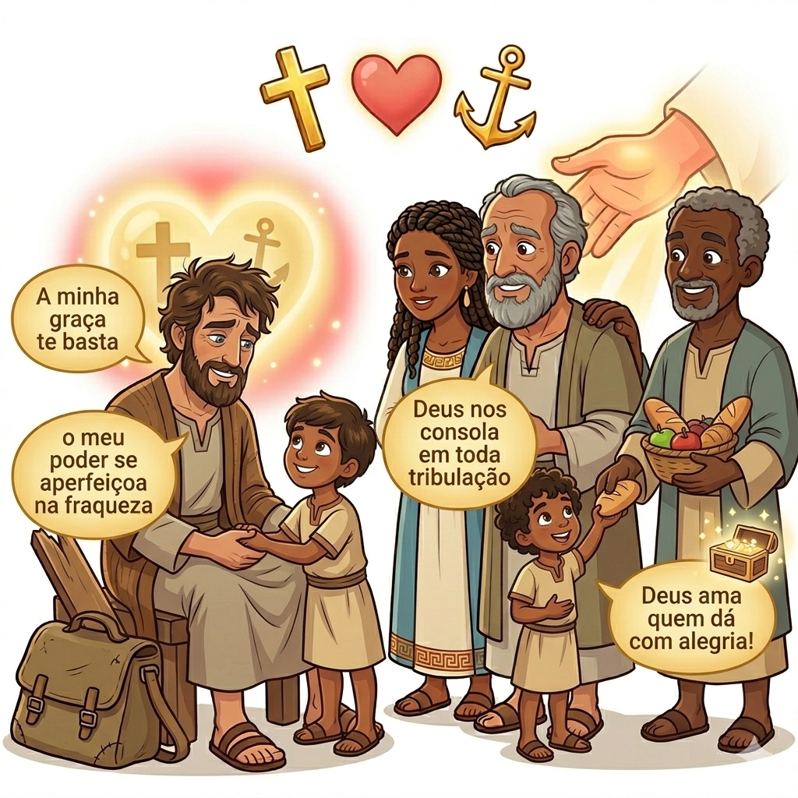
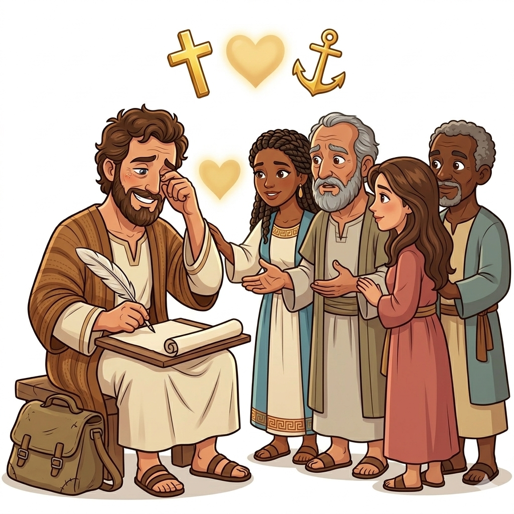
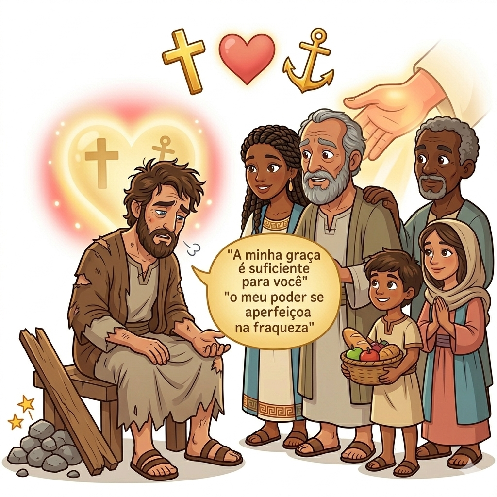
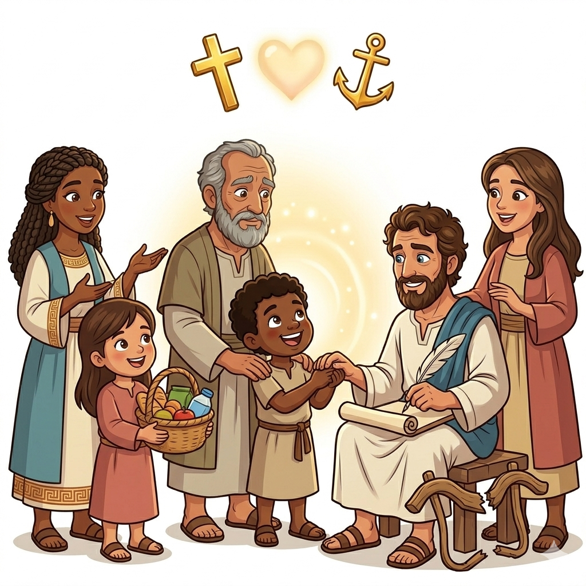
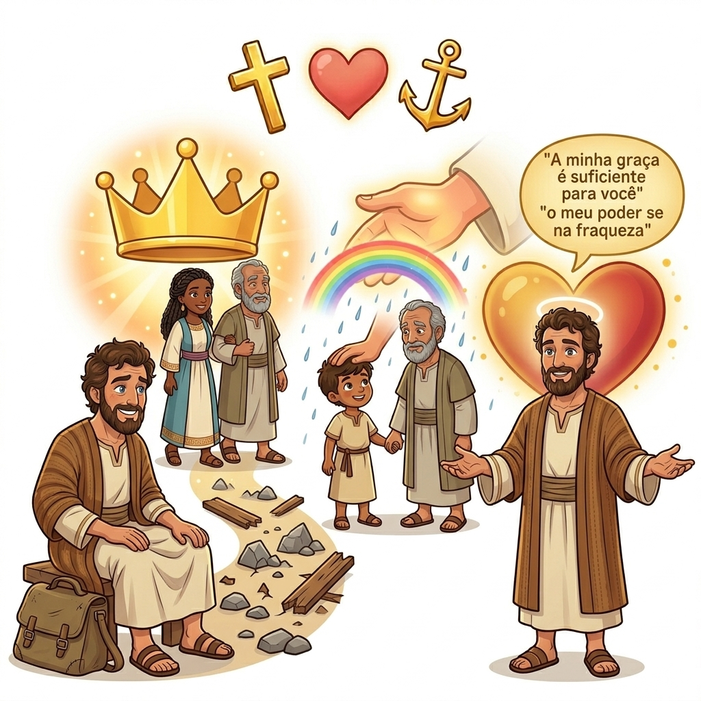
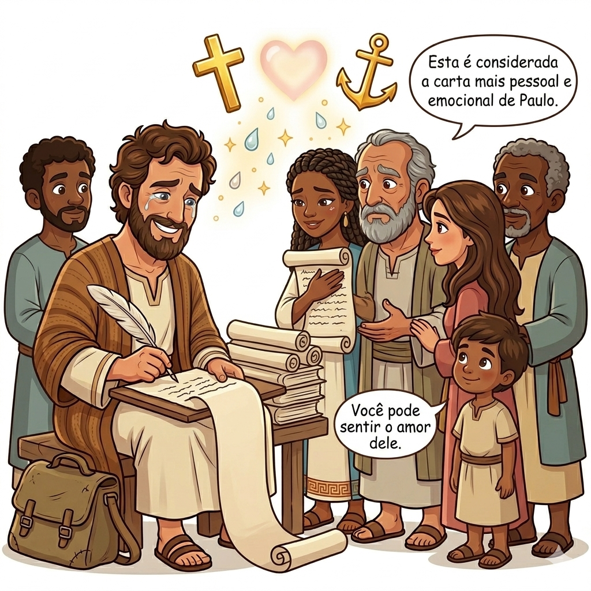

Força na Fraqueza — Um Resumo Visual para Crianças
Quando você se sente pequeno e fraco,
Deus está bem perto, não é um eco!
Seu poder brilha quando eu não posso,
Na minha fraqueza, Ele é o mais grosso!
Paulo aprendeu este grande tesouro,
Que a graça de Deus vale mais que ouro!
📖 "A minha graça te basta, porque o poder se aperfeiçoa na fraqueza." - 2 Coríntios 12:9
Deus nos consola em toda aflição,
Para consolarmos com compaixão!
Quando alguém sofre, posso ajudar,
Pois Deus primeiro veio me abraçar!
O amor de Cristo nos constrange,
E nosso coração Ele arranje!
📖 "Bendito seja o Deus que nos consola em toda tribulação." - 2 Coríntios 1:3-4
Deus ama quem dá com alegria,
Não por tristeza ou obrigação vazia!
Quando compartilho o que tenho aqui,
Deus multiplica e cuida de mim!
Semeio bênçãos, colho gratidão,
Pois dar com amor é linda ação!
📖 "Deus ama quem dá com alegria!" - 2 Coríntios 9:7
"Se alguém está em Cristo, é uma nova criação; as coisas antigas passaram; eis que tudo se tornou novo."
— 2 Coríntios 5:17
Este versículo nos diz algo incrível: quando aceitamos Jesus no nosso coração, começamos uma vida totalmente nova! Não importa o que fizemos de errado antes — em Jesus, temos um recomeço. É como uma borboleta que sai do casulo: algo completamente novo e lindo!

Paulo é um missionário que passou por muitas dificuldades: prisões, naufrágios, perseguições! Mas ele nunca desistiu de pregar sobre Jesus. Nesta carta, ele abre seu coração e mostra como Deus o fortalecia mesmo quando estava fraco e cansado.
"Pelo que me glorio nas fraquezas, para que em mim habite o poder de Cristo."
— 2 Coríntios 12:9b
Os cristãos de Corinto eram pessoas que acreditavam em Jesus, mas enfrentavam desafios e dúvidas. Paulo os amava muito e escreveu esta carta para encorajá-los, ensiná-los e lembrá-los do amor e do poder de Deus em suas vidas!
"Alargai-vos também vós. Tenho grande confiança em vós."
— 2 Coríntios 7:4
Tito era um colaborador de Paulo que viajou até Corinto para levar mensagens e resolver conflitos. Quando voltou com boas notícias sobre a fé dos coríntios, Paulo ficou muito alegre e encorajado!
"Deus, que consola os abatidos, consolou-nos com a vinda de Tito."
— 2 Coríntios 7:6
Paulo conta sobre todas as coisas difíceis que enfrentou: foi preso, apedrejado, naufragou três vezes, passou fome e frio! Mas em tudo isso, ele não desanimou porque sabia que Deus estava com ele.
"Em tudo somos atribulados, mas não angustiados; perplexos, mas não desanimados."
— 2 Coríntios 4:8
Paulo aprendeu uma lição incrível: quando ele se sentia fraco, era exatamente aí que o poder de Deus brilhava mais forte! Esta verdade mudou a vida dele — e pode mudar a nossa também!
"A minha graça te basta, porque o poder se aperfeiçoa na fraqueza."
— 2 Coríntios 12:9a
Paulo escreve com muito amor para encorajar os cristãos de Corinto. Ele os lembra de serem generosos, de perdoarem uns aos outros e de confiarem em Deus em todas as situações da vida!
"Bendito seja o Deus... que nos consola em toda a nossa tribulação."
— 2 Coríntios 1:3-4


2 Coríntios nos ensina que não precisamos ser perfeitos ou super-heróis! Quando nos sentimos fracos, cansados ou com medo, é justamente aí que Deus mostra Seu poder incrível em nossas vidas.
"Quando sou fraco, então é que sou forte."
— 2 Coríntios 12:10
Este livro nos encoraja a confiar em Deus em todas as situações. Todas as promessas de Deus são garantidas em Cristo Jesus — nunca falham!
"Porque todas as promessas de Deus são nele sim."
— 2 Coríntios 1:20
Paulo nos ensina a importância de amar uns aos outros, de perdoar e de ser generosos. Quando compartilhamos o que temos com alegria, Deus abençoa ainda mais nossas vidas!
"Deus ama aquele que dá com alegria."
— 2 Coríntios 9:7
O principal propósito de 2 Coríntios é encorajar os cristãos a perseverarem e não desistirem, mesmo quando a vida fica difícil. Paulo mostra que vale a pena continuar seguindo a Jesus!
"Pelo que não desfalecemos; mas ainda que o nosso homem exterior se corrompa, o interior, contudo, se renova de dia em dia."
— 2 Coríntios 4:16
Paulo quer que os cristãos aprendam a confiar em Deus em meio aos desafios e tribulações. Ele mostra que Deus é fiel e nos consola em todas as nossas aflições.
"Porque a nossa leve e momentânea tribulação produz para nós um eterno peso de glória."
— 2 Coríntios 4:17
Este livro nos ensina a valorizar a graça maravilhosa de Deus! Não importa quão fracos ou imperfeitos nos sintamos, a graça de Deus é suficiente para nós.
"Graças a Deus pelo seu dom inefável!"
— 2 Coríntios 9:15


2 Coríntios é considerada a carta mais pessoal e emocional de Paulo. Ele chora, se alegra, se preocupa e celebra — é como ler o diário de um amigo muito querido!
Paulo menciona que escreveu uma carta anterior "com muitas lágrimas" (2 Cor 2:4). Isso mostra o quanto ele amava profundamente os cristãos de Corinto!
Paulo conta que foi levado ao "terceiro céu" e ouviu coisas indizíveis (2 Cor 12:2-4). Uma visão tão extraordinária que Deus deu um "espinho" para que ele não se orgulhasse!
Se você está em Cristo, você é uma nova criação. O que isso significa para você? Tem alguma coisa na sua vida que você gostaria que fosse renovada por Jesus?
Paulo se sentiu fraco e descobriu que Deus o fortalecia. Quando você se sente fraco ou com medo, como você pode lembrar que o poder de Deus é suficiente para você?
Deus ama quem dá com alegria, não por obrigação. O que você pode compartilhar com outras pessoas esta semana — tempo, carinho, ou algo seu — com um coração feliz?
Leia 2 Coríntios 4:8-9 e escreva em um papel 3 situações difíceis da sua vida que Deus pode transformar. Ele está com você em cada uma delas!
📚 LeituraEscreva 2 Coríntios 5:17 em um papel bonito e coloque em um lugar especial onde você possa ver todo dia — no espelho, na mochila ou na cama!
✏️ MemorizaçãoEscolha algo para compartilhar com alguém esta semana — um brinquedo, um lanche, um elogio sincero ou seu tempo — e faça isso com um sorriso e coração feliz!
❤️ Ação© 2025 - Trilho Kids
Desenvolvido com ❤️ para crianças